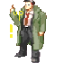
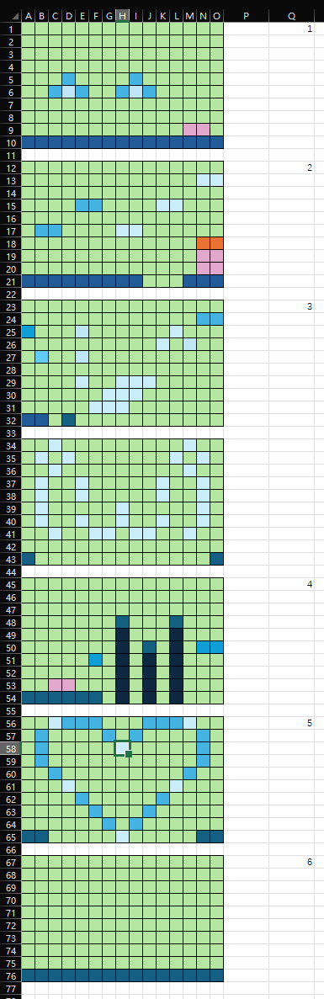
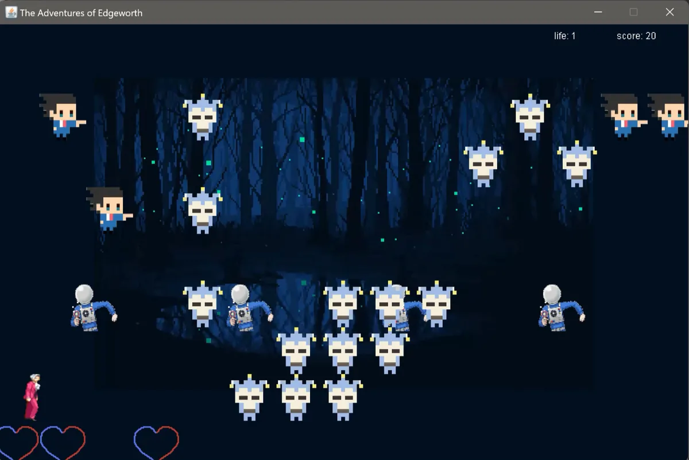
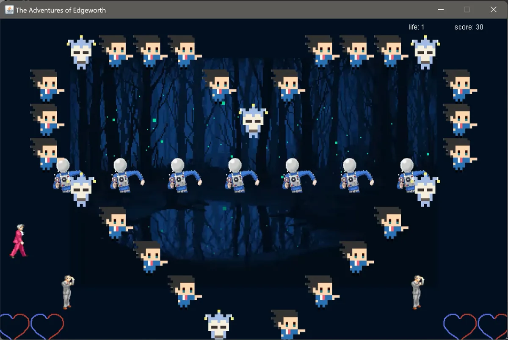
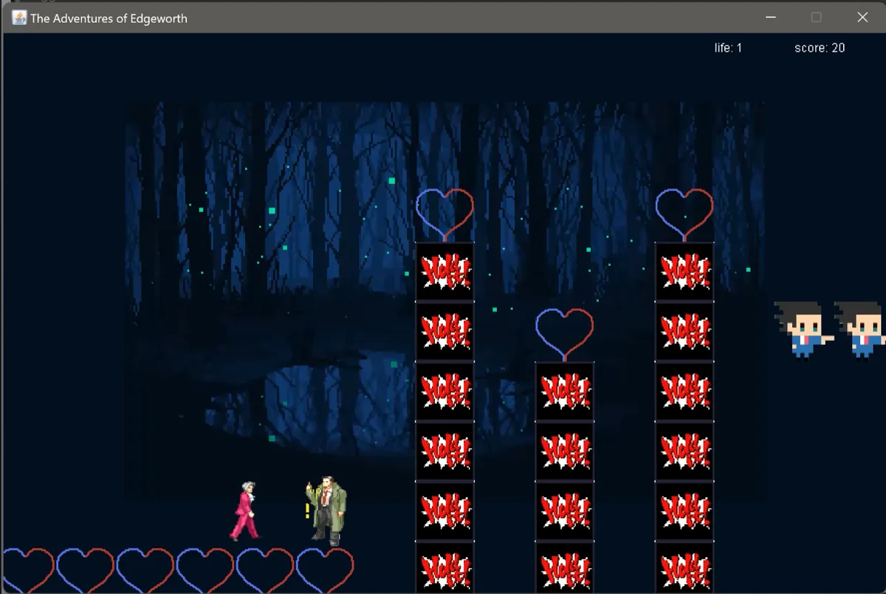
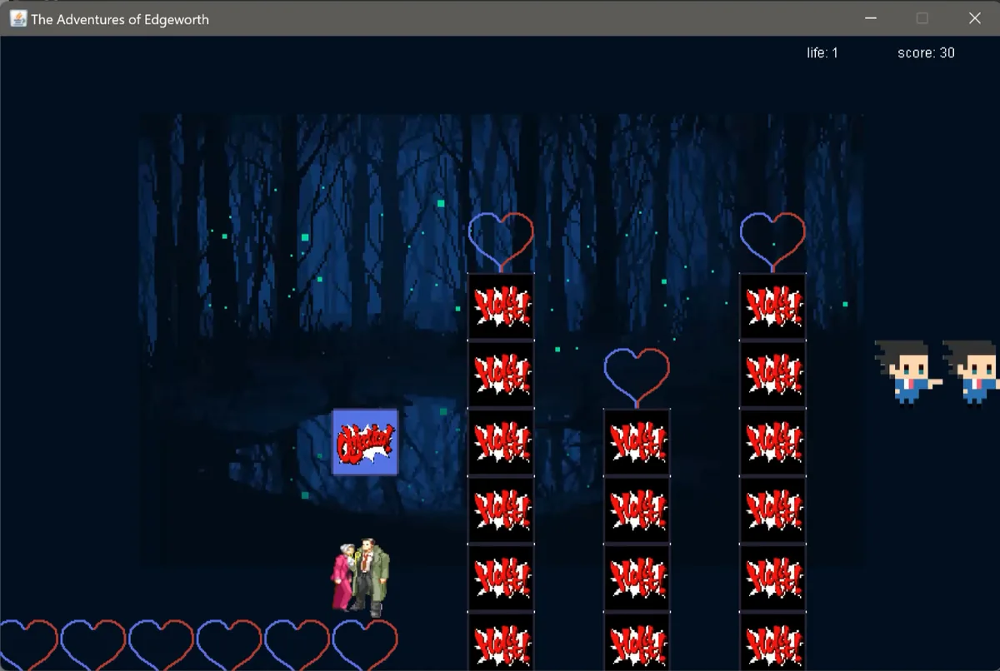

02 · Java game · CPS 2231 · Spring 2024
The Adventures of Edgeworth
A Mario-style platformer written from scratch in Java Swing as a course project: six hand-designed levels, three kinds of enemy, a hidden block and an ending. It started as a desktop app; a 2026 port runs it in the browser.
- Role
- Solo: game design, level design, sprites, code (2024). The 2026 port was built with AI coding tools.
- Timeline
- Apr 26 – May 12, 2024
- Context
- CPS 2231 course project, Wenzhou-Kean University
- Built with
- Java 8, Swing, Java Sound · Eclipse, Aseprite, Excel
The idea
Xinyue (Lily) Feng built the game around two things she loved: the little monster-adventure games she played on the 4399 web-game site as a child, and Capcom’s Ace Attorney series, which she was playing at the time. So the hero is the prosecutor Miles Edgeworth, the enemies are courtroom regulars, and the blocks are the series’ famous “Hold it!” and “Objection!” speech bubbles.
- Miles EdgeworthThe player. Walks, jumps, stomps.
 Winston PaynePaces back and forth. Land on his head for 10 points.
Winston PaynePaces back and forth. Land on his head for 10 points.- Manfred von KarmaCan’t be stomped. Jump over him.
 Wendy OldbagRises out of pipes and floats away.
Wendy OldbagRises out of pipes and floats away.
Dick GumshoePoints at an invisible block. Phoenix blockHit it from below for 10 points.
Phoenix blockHit it from below for 10 points.
Level design
Every scene is a 15 × 10 grid of 60-pixel tiles. Lily planned them in a spreadsheet, one colored cell per block, then typed the coordinates into BackGround.java; a seventh layout was cut because it looked too dazzling once drawn. The shapes are deliberate: scene 3 is a face made of breakable blocks, scene 5 a heart, and every floor tile is a heart.



A hint instead of a tutorial
Scene 4 can’t be finished by jumping alone: the pillars are too tall. Detective Gumshoe stands at the exact spot where an invisible block hangs. Jump under it and an “Objection!” block appears, giving you the extra height to climb.


How it works
Nine classes, about 1,400 lines, no game engine. MyFrame opens a fixed 900 × 600 window, listens to the keyboard and paints each frame into an off-screen image first (double buffering) to stop flicker. BackGround holds a scene’s blocks and enemies and can reset them after a death. The player, every enemy and the end-of-level flag each run on their own thread, updating every 50 or 100 milliseconds.
Collision works on the tile grid. Before each step, Edgeworth checks the blocks next to him:
//Cannot move to the right
if(ob.getX()==this.x+60 && (ob.getY()+50>this.y && ob.getY()-50<this.y)){
if(ob.getType() != 3){
canRight = false;
}
}From Edgeworth.java, unchanged. Type 3 is the hidden block, which you can walk through until it is revealed.
Landing, bumping a block from below and stomping an enemy are the same kind of check one tile up or down. A jump is 18 ticks of rising 10 pixels; a stomp gives a small 5-tick bounce.
Her reflection
Her project report ends with two problems she couldn’t solve at the time. Sound effects misbehaved, so she ended up with two separate audio classes, one for music and one for effects. (The cause, found in 2026: the old applet audio API ignored a play request sent right after a loop request, so every effect kept looping until the game closed.) And ImageIO.read() returned only the first frame of the animated forest GIF; she tried cycling through the frames herself but couldn’t fit that into the way BackGround swaps its background image, so the levels kept a still picture.
Both are solved in the web edition below.
Web edition · 2026
To make the game playable on this site, its rules were ported from Java to JavaScript and the HTML canvas, keeping the same coordinates, speeds, jump timing and collision checks. The Java version was also updated so it still compiles and runs on current Java releases, which no longer support Thread.suspend() or the applet audio API it relied on. Both updates were made with AI coding tools.
| Aspect | Original, 2024 | Web edition, 2026 |
|---|---|---|
| Runs on | Desktop Java (Swing window) | Any modern browser, including phones |
| Background | Still image | The animated forest she planned |
| Sound | Each effect looped until the game closed | Each effect plays once; mute button |
| Motion | Redrawn 20 times a second | Same 20 logic ticks, drawn smoothly in between |
| Game over | Dialog box, then the program closes | Retry the same scene, or start over |
| Ending | Dialog box, then the program closes | Ending screen with score and replay |
| Controls | Arrow keys, Space | Arrows or WASD, touch buttons, pause |
Bugs found along the way
The port turned up three bugs in the original, now fixed in both versions:
- After a death, defeated enemies and broken blocks were restored but never removed from the “removed” lists, so every later death added duplicates (a stomped Winston could survive the next stomp).
- Enemies kept their last direction after a reset, so an Oldbag on her way down could sink through the floor for good.
- For a split second after each reset, Manfred von Karma wore Oldbag’s sprite.
Proving it can still be beaten
The web edition has an automated test suite. One test runs a breadth-first search over every reachable position (left, right or nothing, jump or not, every 50 ms tick), with enemies left out, and checks that each of the six scenes can still be finished. As a sanity check, it correctly fails if the hidden block in scene 4 is removed.
Credits
Game, level design, sprites and original code: Xinyue (Lily) Feng.
Characters: from Capcom’s Ace Attorney series; this is a non-commercial fan work.
Title-screen art: Ace Attorney © Capcom.
Forest animation: pixel art by Anas Abdin (@anasabdin).
Music and sound effects: third-party audio chosen by the author; all rights belong to their owners.
2026 web port and Java update: built with AI coding tools.